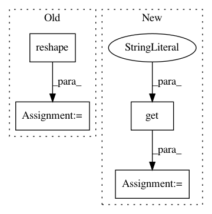

7e3487729c18ce287d6c22f7f01945601fa76f85,python/baseline/dy/embeddings.py,CharConvEmbeddings,__init__,#CharConvEmbeddings#Any#,73
Before Change
weights = kwargs.get("weights")
embedding_weight = np.reshape(weights, (self.vsz, 1, self.dsz))
vsz, dsz = embedding_weight.shape
embedding_weight = np.reshape(embedding_weight, (vsz, 1, dsz))
self.embeddings = self.pc.lookup_parameters_from_numpy(embedding_weight, name=name)
filtsz = kwargs.get("cfiltsz", [3])
cmotsz = kwargs.get("wsz", 30)
self.wsz = len(filtsz) * cmotsz
After Change
self.embeddings = self.pc.lookup_parameters_from_numpy(embedding_weight, name=name)
filtsz = kwargs.get("cfiltsz", [3])
gate = kwargs.get("gating", "skip")
num_gates = kwargs.get("num_gates", 1)
max_feat = kwargs.get("max_feat", 200)
nfeat_factor = kwargs.get("nfeat_factor")
cmotsz = kwargs.get("wsz", 30)
self.pool, self.wsz = self._create_char_comp(filtsz, cmotsz, self.dsz, gate, num_gates, max_feat, nfeat_factor)
In pattern: SUPERPATTERN
Frequency: 3
Non-data size: 4
Instances
Project Name: dpressel/mead-baseline
Commit Name: 7e3487729c18ce287d6c22f7f01945601fa76f85
Time: 2018-09-29
Author: dpressel@gmail.com
File Name: python/baseline/dy/embeddings.py
Class Name: CharConvEmbeddings
Method Name: __init__
Project Name: pyannote/pyannote-audio
Commit Name: b0a78567606a3ff24437501fc83239181b9478b3
Time: 2019-02-28
Author: pavel.korshunov@idiap.ch
File Name: pyannote/audio/features/utils.py
Class Name: RawAudio
Method Name: __call__
Project Name: dpressel/mead-baseline
Commit Name: da1e8c2de9b265dcb18256a0a087165faf138b42
Time: 2019-01-14
Author: blester125@users.noreply.github.com
File Name: python/baseline/pytorch/seq2seq/model.py
Class Name: EncoderDecoderModelBase
Method Name: predict